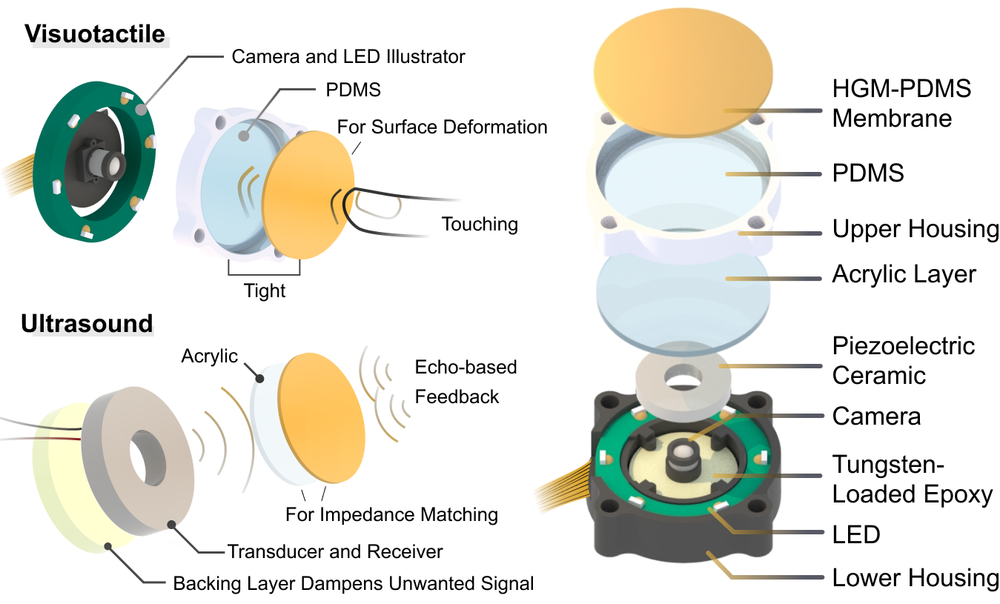

Key Contributions
- Integrated Sensor Architecture: Combines visuotactile imaging and ultrasound using a compact, coaxial design with a thin elastomer and optimized PZT transducer.
- Ultrasound-Enhanced Sensing: Enables non-contact proximity detection and contact-based material classification with dynamic mode switching.
- Experimental Validation: Demonstrates robust performance in object recognition tasks, supporting applications in robotics and inspection.
Structure Illustration
UltraTac delivers dual-modal perception by integrating surface texture information from camera imaging through an elastomer membrane with material properties detected via ultrasound.
Sensor Fabrication

The fabrication process follows an eight-step procedure, with parallel assembly for the upper and lower sensor components.
System Workflow

The pipeline is structured into three hierarchical levels: sensor, preprocessing, and processing.
Timeline of System

The inspection process follows a structured timeline and consists of three phases: approach and grasp, touch, and take.